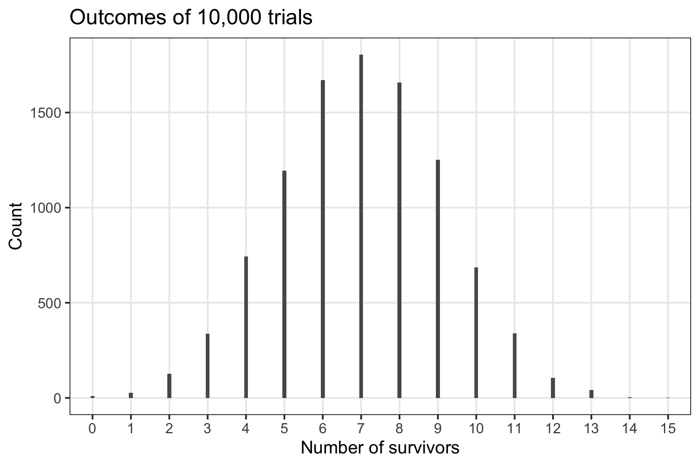
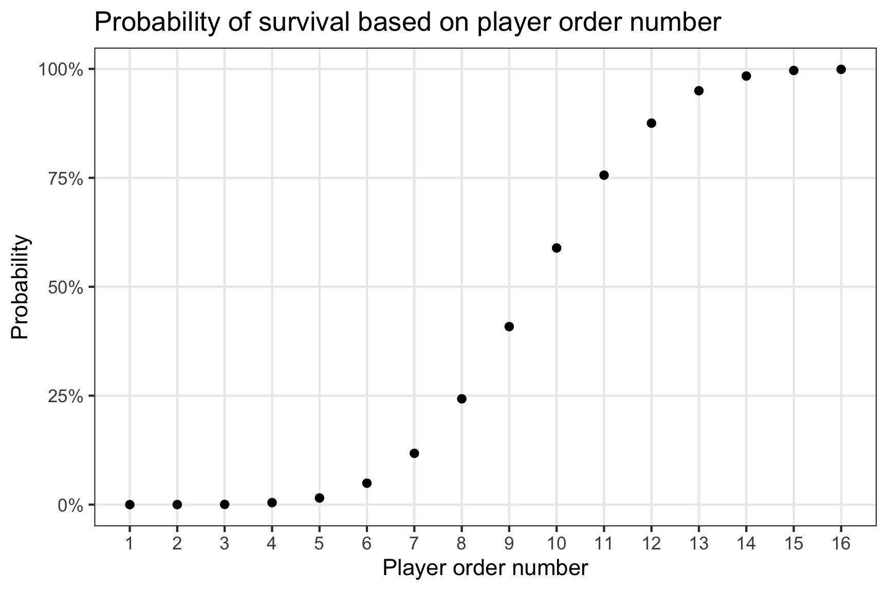
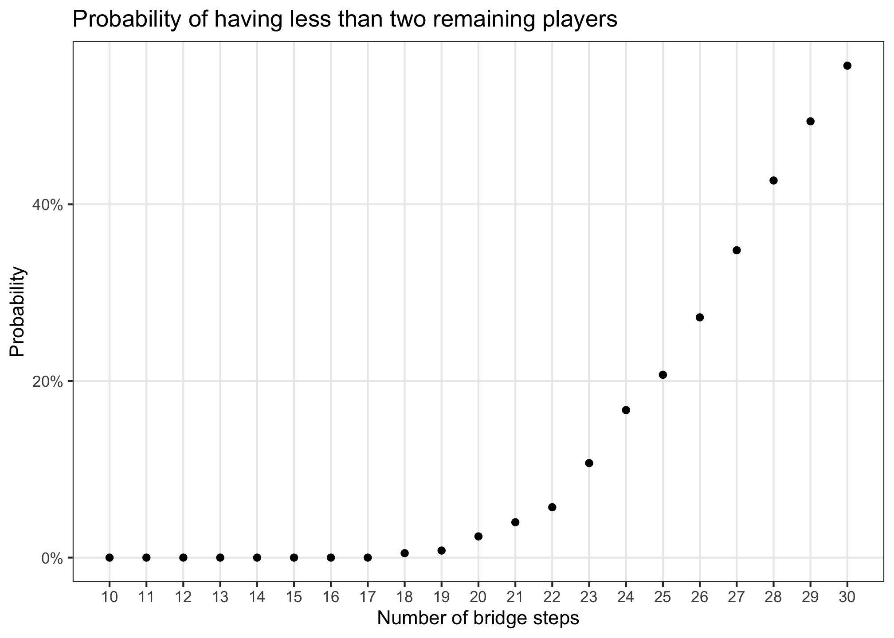
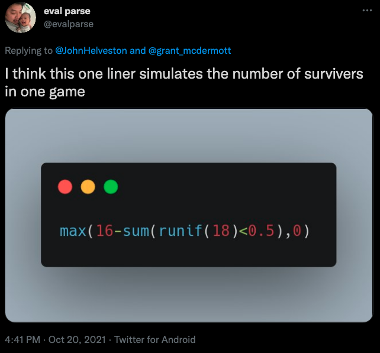
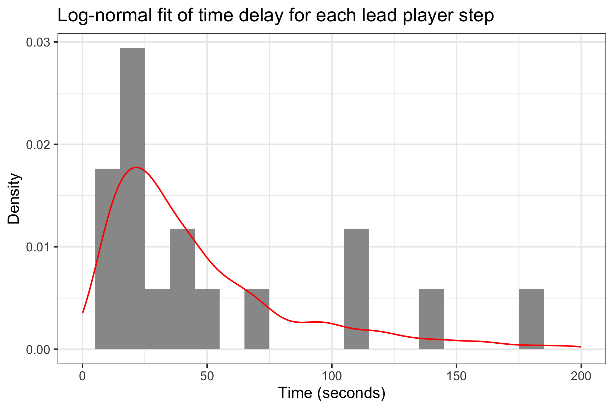
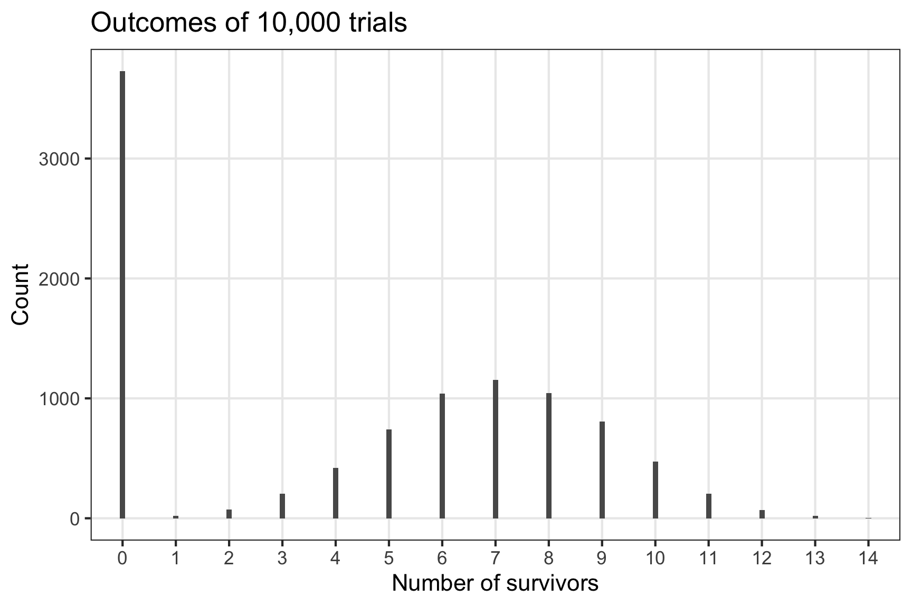
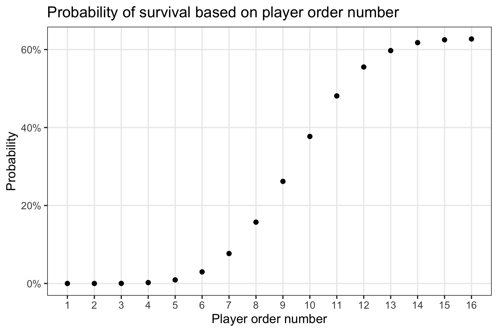

A simple monte carlo simulation of the expected number of survivors from the Squid Game bridge scene Contains Spoilers
Author
John Paul Helveston
Published
2021-10-19
If you had a Netflix account in 2021, chances are you’ve at least heard of Squid Game – a South Korean survival drama in which players play a series of children’s games for the chance to win a large sum of money, with the penalty of death if they lose. The show is like a mixture of Richard Connell’s The Most Dangerous Game, the Hunger Games, and the horror stories of Edgar Allan Poe. It quickly became the #1 most most-watched show after just one week of being released.
SPOILER ALERT: I mention a few details in this post that might be spoilers if you haven’t yet watched the show.
In Episode 7, the remaining 16 players play a game where they must cross a glass bridge with 18 steps. At each step, the lead player must choose between two glass panes – one made of tempered glass strong enough to support two players, and the other of regular glass that will shatter if stepped on, in which case the player will plummet to their death. You can watch the scene here.
When I watched the episode, I immediately started trying to calculate the expected number of survivors for the game. While seemingly straightforward, the problems is a bit more complex when you realize that each person behind the leader learns information from the leader’s choices. That is, if the lead player chooses the “not safe” pane, that player dies, but every remaining player now knows which glass pane is “safe” at that step.
Rather than try and work the math, I decided to take a Monte Carlo approach – just simulate a bunch of trials of the game, then count up how many players “survived” in each trial.
Defining the simulation
The first step I took in trying to simulate the game is to simplify the problem. The actual game has two glass panes (one “safe” and one “not safe”) at each step in the bridge. This same situation can be modeled with a series of single steps where the lead player has a 50% chance of surviving at each step. If the lead player steps on a “not safe” pane, we mark that player as dead and replace that pane with a “safe” one, allowing all remaining players to safely cross it.
To run a simulation, I first had to create the players, which I modeled using a simple data.table of 1s and 0s for “alive” and “dead”. Everyone starts out alive.
# Create an initial data.table of playerslibrary(data.table)num_players <-16players <-data.table(player =seq(num_players), alive =1)players
To simulate a single game, I created a run_game() function that iterates through a specified number of bridge steps, each with a 50% chance of being “safe”. The function iterates through each step until all “safe” panels are known, at which point the remaining “alive” players are assumed to all be able to safely finish crossing the bridge (I am assuming that all players have sufficient time to cross the bridge).
# Define a function for simulating one gamerun_game <-function(players, num_steps) { lead_player <-1for (step inseq(num_steps)) {# 50% chance that the pane is safeif (sample(c(TRUE, FALSE), 1)) {# The pane is safe, keep going!next } else {# The pane broke 💀# Before continuing, check if any players are still aliveif (sum(players$alive) ==0) { return(players$alive) }# The lead player died players$alive[lead_player] <-0 lead_player <- lead_player +1 } }return(players$alive)}
With that, let’s run one game of 18 steps and 16 players (same as in the show):
# Run one iteration of the gamesingle_game <-run_game(players, num_steps =18)single_game
#> [1] 0 0 0 0 0 0 0 0 0 0 0 0 1 1 1 1
So after one game, we had 4 survivors. But of course if we want to get an estimate of the expected number of survivors, we need to run lots of trials of the game (a lot of bits are about to die).
# Run the main trials# Repeat the "players" data.table for each trialnum_trials <-10000sims <- players[rep(seq(num_players), num_trials),]# Keep track of the trial numbersims[, trial :=rep(seq(num_trials), each = num_players)]# Now run the simulation for each trialsims[, alive :=run_game(.SD, num_steps =18), by = trial]
In addition to being very fast, one really nice thing about running the trials using {data.table} is that you get all of the results back in a nicely-formatted data.table, which you can then use to compute all sorts of statistics.
For example, if you wanted to see the outcome of an individual trial, just filter for it:
Of course, we can also use the trials to compute the expected number of survivors from the game. Since the outcomes are discrete, I take median number of survivors across all trials to reflect the expected number of survivors:
# Compute the expected number of survivors across all trialstrials_counts <- sims[, .(count =sum(alive)), by = trial]expected_survivors <-median(trials_counts$count)expected_survivors
#> [1] 7
The simulation suggests that we should expect 7 players to survive when running a game with 16 players and 18 steps. When we look at the distribution of trial outcomes, we can also see that there is a pretty good chance of having 6 or 8 survivors in any one round of the game:
# Plot the distribution of survivors across all trialslibrary(ggplot2)trial_count_summary <-as.data.frame(table(trials_counts$count))names(trial_count_summary) <-c("n_survivors", "count")ggplot(trial_count_summary) +geom_col(aes(x = n_survivors, y = count), width =0.1) +theme_bw() +theme(panel.grid.minor =element_blank()) +labs(title ="Outcomes of 10,000 trials",x ="Number of survivors", y ="Count" )

Choose wisely
While the expected number of survivors from these trials is higher than the actual number in the TV series (only 3 survive), keep in mind that these trials reflect ideal conditions in which all the players act strictly rationally. In the show, multiple players die as a result of the selfish or revengeful actions of other players, not strictly because of the breaking glass panes.
But perhaps the more important question from the perspective of the players is:
“Which number should I choose?”
Obviously choosing a larger number closer to the back of the line gives the player a higher probability of survival because the players in front identify all the “safe” glass panes. But how likely would you be to survive if you chose a number near the middle (which most players in the TV series chose first)?
Since we have all the results of every trial outcome for every player in a convenient data.table, computing the probability of surviving for each player is straightforward:
# Plot the probability of survival based on the player order numbersurvival_summary <- sims[, .(p_survive =sum(alive) / num_trials), by = player]ggplot(survival_summary) +geom_point(aes(x = player, y = p_survive)) +scale_y_continuous(labels = scales::percent) +scale_x_continuous(breaks =seq(16)) +theme_bw() +theme(panel.grid.minor =element_blank()) +labs(title ="Probability of survival based on player order number",x ="Player order number", y ="Probability" )

So even though the expected number of survivors is 7 out of 16 players, those survivors are overwhelmingly more likely to be the players who chose the highest order numbers.
How many steps to include?
One final question I had was what if the game designers chose to include more steps in the bridge? Because this was not supposed to be the last game, the designers needed to make sure at least two players survived, otherwise the games would simply end.
We can see from the previous simulations that with 16 players, the choice of 18 steps already puts a small (but non-zero) probability on having less than two survivors:
# Probability of having less than two survivorssum(trials_counts$count <2) / num_trials
#> [1] 0.0036
Of course this is probably an under-estimate of the true probability of having less than two survivors because the players are human beings who tend to make irrational choices when playing a deadly game (as we saw play out in the TV series version of the game).
Still, what if the game designers were more risk seeking? How many steps could they include if they were willing to live with, for example, a 5% chance of having less than 2 players remaining at the end of the bridge game?
To answer that, we have to re-run our simulations, but with an increasing number of steps. To keep things simple, I run 1,000 iterations of the game over an increasing number of steps from 10 to 30:
# Re-run the trials using an increasing number of bridge steps (10 to 30)# Repeat the "players" data.table for each trialmin_num_steps <-10max_num_steps <-30step_trials <-seq(min_num_steps, max_num_steps, by =1)num_step_trials <-length(step_trials)num_trials <-1000step_sims <- players[rep(seq(num_players), num_trials*num_step_trials),]# Keep track of the trial number and the step numberstep_sims[, trial :=rep(seq(num_trials*num_step_trials), each = num_players)]step_sims[, steps :=rep(step_trials, each = num_players*num_trials)]# Now run the simulation for each trialstep_sims[, alive :=run_game(.SD, num_steps =unique(steps)), by = trial]
Now I can compute the probability of having less than two survivors for each step size:
# Compute probability of having less than two survivors for each step sizestep_counts <- step_sims[, .(count =sum(alive)), by =c("trial", "steps")]step_summary <- step_counts[, .(p_under2 =sum(count <2) / num_trials), by = steps]ggplot(step_summary) +geom_point(aes(x = steps, y = p_under2)) +scale_y_continuous(labels = scales::percent) +scale_x_continuous(breaks = step_trials) +theme_bw() +theme(panel.grid.minor =element_blank()) +labs(title ="Probability of having less than two remaining players",x ="Number of bridge steps", y ="Probability" )

I found it interesting that 18 steps seems to be the point at which the probability of having less than two remaining players begins to increase from essentially 0. With just a few more steps, the probability rapidly increases:
Okay, that’s it! I’m sure I probably made an error somewhere - let me know if you find one, and hopefully this was an interesting example of how to conduct some relatively efficient Monte Carlo simulations in R with the help of the {data.table} package.
Update 1 - including time
Updated October 22, 2021
Many people on twitter and reddit had some great suggestions about this post. In particular, @evalparse had a brilliant, one-line solution for simulating the number of survivors in one game:

One critique that was mentioned multiple times was that my simulations left out a critical element in the game: time. In the show, the players had just 16 minutes to cross the bridge, otherwise all of the glass panes shatter and anyone left behind dies. I originally omitted time for simplicity, but looking back at it now this is a pretty crucial element in the game because it means that the latter order numbers aren’t necessarily so safe after all – the further back in line you are, the higher risk you face of running out of time.
So, here’s one attempt at including time in the simulation.
My immediate thought was to assume a distribution for the amount of time delay it takes for a player to take a step and then sample from that distribution for each player in each trial of the game. The key question is what should that distribution look like?
Obviously time needs to be positive, so I can’t use distributions that could have negative numbers. But time also can’t go on forever – as we saw in the show, the people in the back of the line start to get impatient if the lead player takes too long and might “encourage” them to make a choice.
Since I didn’t have any real-world data to inform my decision (I sure hope there are no real-world data on this!), I decided to use the data from the show itself. I re-watched the scene and timed how long each lead player took to take a step. Time in the show isn’t quite preserved because the camera cuts to other scenes, there’s slow motion, etc., but many of the steps could be timed, so here’s what I measured:
# Lead player step times in secondsseconds <-c(36, 20, 25, 49, 66, 22, 112, 10, 115, 184, 144, 18, 22, 36, 28, 15, 10)summary(seconds)
#> Min. 1st Qu. Median Mean 3rd Qu. Max.
#> 10.00 20.00 28.00 53.65 66.00 184.00
Most lead players moved relatively quickly, with a median of just 28 seconds. But a few players took longer. In the show, player 9 (the bully guy) took quite a long time, and he might have taken longer if he wasn’t forced to move by the woman he scorned.
Given these considerations, I chose to model the step time with a log-normal distribution because it prevents negative times and it has a long tail for those one or two players who might take a long time to move. Here are the parameters that fit these data, using the lovely fitdistr() function from the {MASS} package:
meanlog <- fit$estimate[1]sdlog <- fit$estimate[2]ggplot() +geom_histogram(aes(x = seconds, y = ..density..), binwidth =10, fill ="grey60") +geom_density(aes(x =rlnorm(1000, meanlog, sdlog)), color ="red") +scale_x_continuous(limits =c(0, 200)) +theme_bw() +labs(title ="Log-normal fit of time delay for each lead player step",x ="Time (seconds)",y ="Density" )

Is it a good fit? Eh, sort of?
Do I have time to do a better job? Not really.
One issue with the log-normal though is that you can occasionally get a really high number out on that long tail, which I would think is highly unlikely because at some point the next player is just going to push you off the bridge. So I censored my log-normal fit at 200 seconds. So, with this in mind, I created a new run_game_timed() function that includes a time delay for each step, sampling from a censored log-normal distribution.
# Modified function for simulating one game with timerun_game_timed <-function(players, num_steps, max_seconds, meanlog, sdlog) { lead_player <-1 cum_time <-0for (step inseq(num_steps)) { cum_time <- cum_time +min(rlnorm(1, meanlog, sdlog), 200)if (cum_time >= max_seconds) { return(players$alive*0) }if (sample(c(TRUE, FALSE), 1)) { next }if (sum(players$alive) ==0) { return(players$alive) } players$alive[lead_player] <-0 lead_player <- lead_player +1 }return(players$alive)}
Now I can re-run all the trials and compute a new expected number of survivors:
# Re-run trialsnum_trials <-10000sims_timed <- players[rep(seq(num_players), num_trials),]sims_timed[, trial :=rep(seq(num_trials), each = num_players)]sims_timed[, alive :=run_game_timed( .SD, num_steps =18, max_seconds =16*60, meanlog, sdlog), by = trial]# Compute the new expected number of survivors across all trialstrials_counts_timed <- sims_timed[, .(count =sum(alive)), by = trial]expected_survivors <-median(trials_counts_timed$count)expected_survivors
#> [1] 5
As would be expected, the expected number of survivors decreased, which is now closer to the actual number of survivors in the show (3).
But how about the distribution? Well, by introducing time, all we’ve really done is modify the original distribution to be “zero-inflated” (which is super common in data sets you run across in the wild):
# Plot the distribution of survivors across all trialstrial_count_timed_summary <-as.data.frame(table(trials_counts_timed$count))names(trial_count_timed_summary) <-c("n_survivors", "count")ggplot(trial_count_timed_summary) +geom_col(aes(x = n_survivors, y = count), width =0.1) +theme_bw() +theme(panel.grid.minor =element_blank()) +labs(title ="Outcomes of 10,000 trials",x ="Number of survivors",y ="Count" )

Of course, this also impacts the likelihood of survival for each individual player. As might be expected, zero-inflating the distribution of survivors simply reduces the probability of survival for all players, with the higher-number players still ranking the most likely to survive:
# Plot the probability of survival based on the player order numbersurvival_summary_timed <- sims_timed[, .(p_survive =sum(alive) / num_trials), by = player]ggplot(survival_summary_timed) +geom_point(aes(x = player, y = p_survive)) +scale_y_continuous(labels = scales::percent) +scale_x_continuous(breaks =seq(16)) +theme_bw() +theme(panel.grid.minor =element_blank()) +labs(title ="Probability of survival based on player order number",x ="Player order number",y ="Probability" )

This is of course is not quite what might be expected. Instead, I would expect the probability to be a tiny bit lower for the very last player or two as they could get left behind. But I chose to ignore feature as the lead player delay seemed to be a much bigger factor in determining survival. Plus, if you have an issue with how “realistic” my modeling is, I would encourage you to remember the context of this entire exercise (if you think anything about this is realistic, please see a psychiatrist).
Update 2
Updated December 21, 2021
Lukas Gröninger wrote a similar post on his blog where he also provides the mathematical solution to the expected number of survivors - check it out!
Update 3
Updated May 9, 2022
Henk Tijms, Professor Emeritus at VU University Amsterdam, wrote a fantastic article introducing the concept of Markov Chains. In the article, he uses the Squid Game bridge scene as an example (along with several other classic probability problems, like Egg Russian Roulette) to demonstrate the power of Markov Chains. In his analysis he computes the expected number of survivors, the probability of survival for each player, and the probability distribution of the number of survivors. The Squid Game example starts on page 7.
Appendix
Here is the combined code for this entire simulation:
# Rmd settingsknitr::opts_chunk$set(warning =FALSE,message =FALSE,comment ="#>",fig.align ="center",fig.path ="figs/",fig.retina =3)set.seed(5678)# Create an initial data.table of playerslibrary(data.table)num_players <-16players <-data.table(player =seq(num_players), alive =1)players# Define a function for simulating one gamerun_game <-function(players, num_steps) { lead_player <-1for (step inseq(num_steps)) {# 50% chance that the pane is safeif (sample(c(TRUE, FALSE), 1)) {# The pane is safe, keep going!next } else {# The pane broke 💀# Before continuing, check if any players are still aliveif (sum(players$alive) ==0) { return(players$alive) }# The lead player died players$alive[lead_player] <-0 lead_player <- lead_player +1 } }return(players$alive)}# Run one iteration of the gamesingle_game <-run_game(players, num_steps =18)single_game# Run the main trials# Repeat the "players" data.table for each trialnum_trials <-10000sims <- players[rep(seq(num_players), num_trials),]# Keep track of the trial numbersims[, trial :=rep(seq(num_trials), each = num_players)]# Now run the simulation for each trialsims[, alive :=run_game(.SD, num_steps =18), by = trial]# View one trial outcomesims[trial ==42]# Compute the expected number of survivors across all trialstrials_counts <- sims[, .(count =sum(alive)), by = trial]expected_survivors <-median(trials_counts$count)expected_survivors# Plot the distribution of survivors across all trialslibrary(ggplot2)trial_count_summary <-as.data.frame(table(trials_counts$count))names(trial_count_summary) <-c("n_survivors", "count")ggplot(trial_count_summary) +geom_col(aes(x = n_survivors, y = count), width =0.1) +theme_bw() +theme(panel.grid.minor =element_blank()) +labs(title ="Outcomes of 10,000 trials",x ="Number of survivors", y ="Count" )# Plot the probability of survival based on the player order numbersurvival_summary <- sims[, .(p_survive =sum(alive) / num_trials), by = player]ggplot(survival_summary) +geom_point(aes(x = player, y = p_survive)) +scale_y_continuous(labels = scales::percent) +scale_x_continuous(breaks =seq(16)) +theme_bw() +theme(panel.grid.minor =element_blank()) +labs(title ="Probability of survival based on player order number",x ="Player order number", y ="Probability" )# Probability of having less than two survivorssum(trials_counts$count <2) / num_trials# Re-run the trials using an increasing number of bridge steps (10 to 30)# Repeat the "players" data.table for each trialmin_num_steps <-10max_num_steps <-30step_trials <-seq(min_num_steps, max_num_steps, by =1)num_step_trials <-length(step_trials)num_trials <-1000step_sims <- players[rep(seq(num_players), num_trials*num_step_trials),]# Keep track of the trial number and the step numberstep_sims[, trial :=rep(seq(num_trials*num_step_trials), each = num_players)]step_sims[, steps :=rep(step_trials, each = num_players*num_trials)]# Now run the simulation for each trialstep_sims[, alive :=run_game(.SD, num_steps =unique(steps)), by = trial]# Compute probability of having less than two survivors for each step sizestep_counts <- step_sims[, .(count =sum(alive)), by =c("trial", "steps")]step_summary <- step_counts[, .(p_under2 =sum(count <2) / num_trials), by = steps]ggplot(step_summary) +geom_point(aes(x = steps, y = p_under2)) +scale_y_continuous(labels = scales::percent) +scale_x_continuous(breaks = step_trials) +theme_bw() +theme(panel.grid.minor =element_blank()) +labs(title ="Probability of having less than two remaining players",x ="Number of bridge steps", y ="Probability" )step_summary[steps %in%seq(18, 23)]# Lead player step times in secondsseconds <-c(36, 20, 25, 49, 66, 22, 112, 10, 115, 184, 144, 18, 22, 36, 28, 15, 10)summary(seconds)fit <- MASS::fitdistr(seconds, "log-normal")fitmeanlog <- fit$estimate[1]sdlog <- fit$estimate[2]ggplot() +geom_histogram(aes(x = seconds, y = ..density..), binwidth =10, fill ="grey60") +geom_density(aes(x =rlnorm(1000, meanlog, sdlog)), color ="red") +scale_x_continuous(limits =c(0, 200)) +theme_bw() +labs(title ="Log-normal fit of time delay for each lead player step",x ="Time (seconds)",y ="Density" )# Modified function for simulating one game with timerun_game_timed <-function(players, num_steps, max_seconds, meanlog, sdlog) { lead_player <-1 cum_time <-0for (step inseq(num_steps)) { cum_time <- cum_time +min(rlnorm(1, meanlog, sdlog), 200)if (cum_time >= max_seconds) { return(players$alive*0) }if (sample(c(TRUE, FALSE), 1)) { next }if (sum(players$alive) ==0) { return(players$alive) } players$alive[lead_player] <-0 lead_player <- lead_player +1 }return(players$alive)}# Re-run trialsnum_trials <-10000sims_timed <- players[rep(seq(num_players), num_trials),]sims_timed[, trial :=rep(seq(num_trials), each = num_players)]sims_timed[, alive :=run_game_timed( .SD, num_steps =18, max_seconds =16*60, meanlog, sdlog), by = trial]# Compute the new expected number of survivors across all trialstrials_counts_timed <- sims_timed[, .(count =sum(alive)), by = trial]expected_survivors <-median(trials_counts_timed$count)expected_survivors# Plot the distribution of survivors across all trialstrial_count_timed_summary <-as.data.frame(table(trials_counts_timed$count))names(trial_count_timed_summary) <-c("n_survivors", "count")ggplot(trial_count_timed_summary) +geom_col(aes(x = n_survivors, y = count), width =0.1) +theme_bw() +theme(panel.grid.minor =element_blank()) +labs(title ="Outcomes of 10,000 trials",x ="Number of survivors",y ="Count" )# Plot the probability of survival based on the player order numbersurvival_summary_timed <- sims_timed[, .(p_survive =sum(alive) / num_trials), by = player]ggplot(survival_summary_timed) +geom_point(aes(x = player, y = p_survive)) +scale_y_continuous(labels = scales::percent) +scale_x_continuous(breaks =seq(16)) +theme_bw() +theme(panel.grid.minor =element_blank()) +labs(title ="Probability of survival based on player order number",x ="Player order number",y ="Probability" )